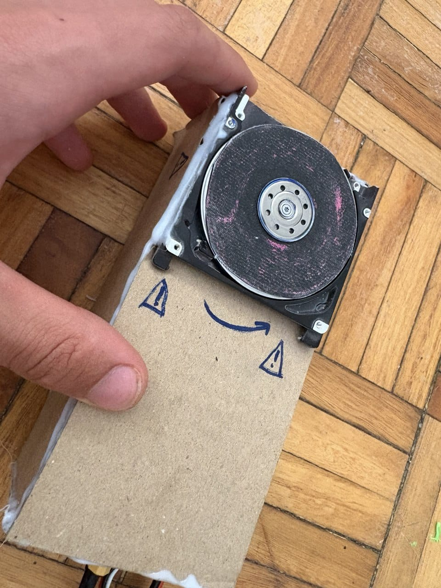
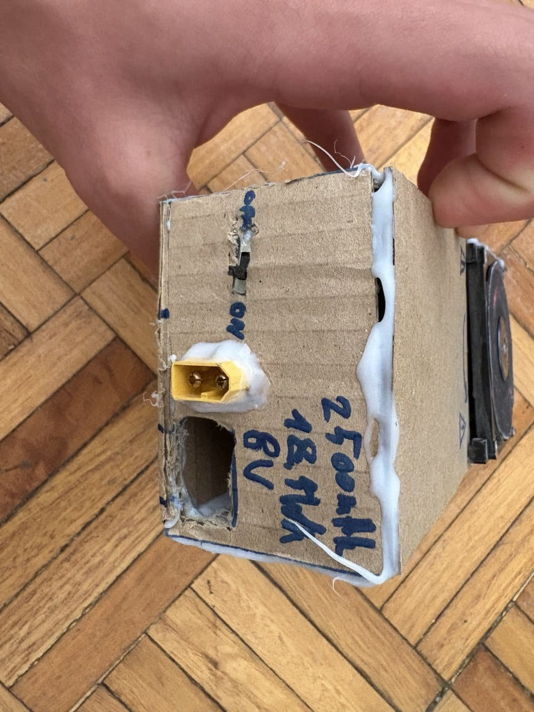
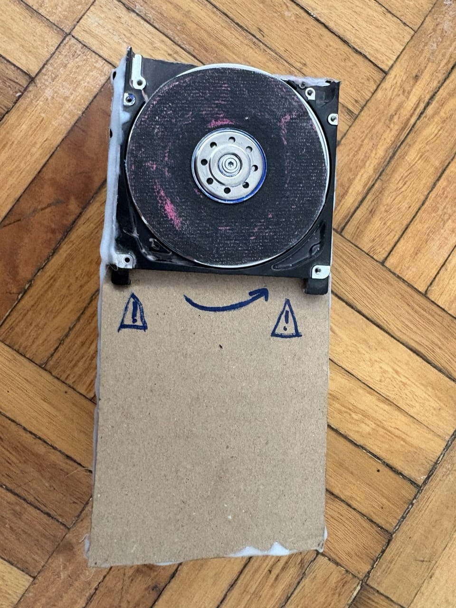
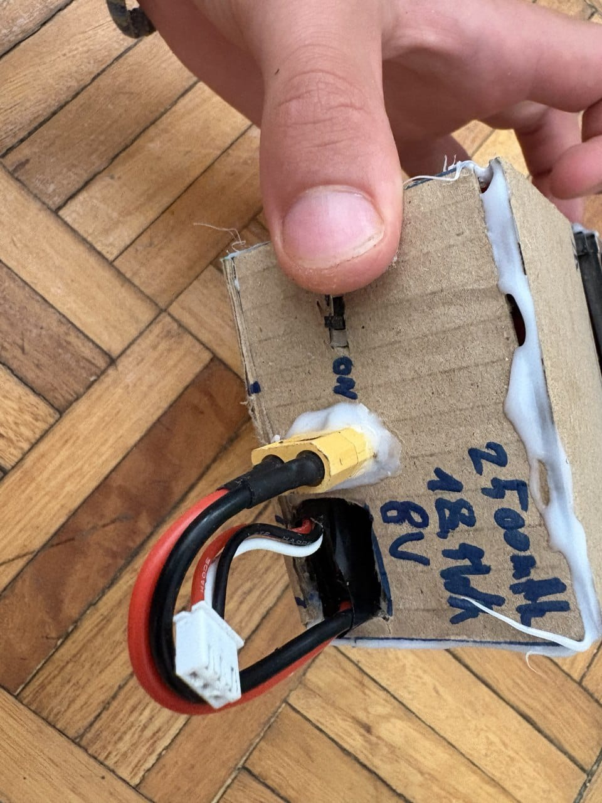
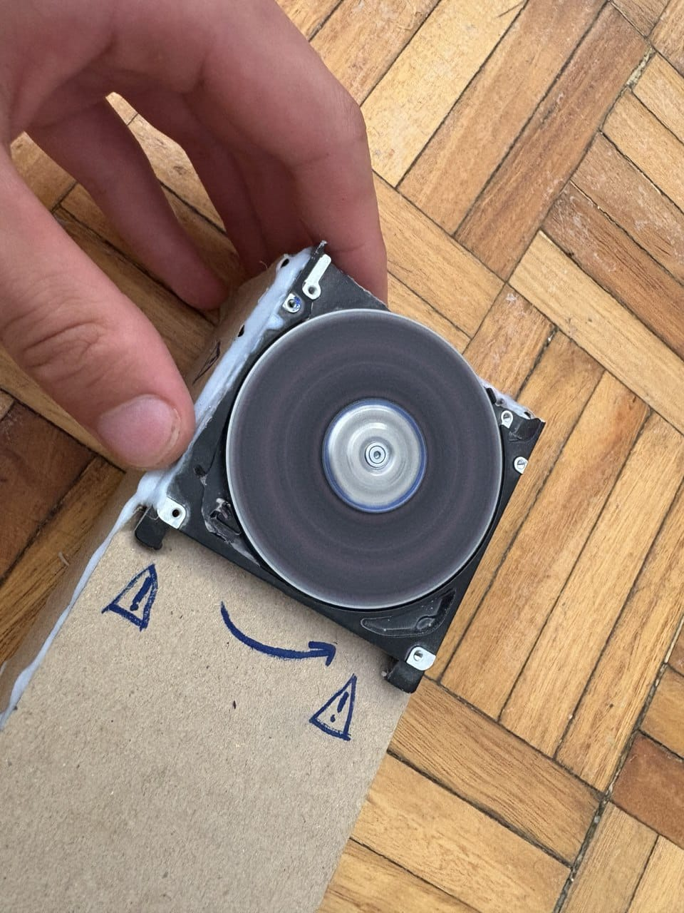

Проект небольшого заточного станка, созданного с использованием деталей старого DVD-привода. Устройство использует переработанные компоненты для создания полезного механического инструмента.

DVD Disc Sharpener — это экспериментальный механический проект, в котором старый DVD-привод получил новую жизнь в виде компактного заточного устройства. Основная идея проекта — повторное использование деталей техники и создание функционального инструмента из доступных компонентов. В конструкции используются механические элементы DVD-привода, электродвигатель и заточной диск, изготовленный на основе модифицированного DVD-диска. Проект объединяет механику, электронику и инженерное мышление.
Механический экспериментальный станок
DVD-привод, переработанные детали, картон
Электродвигатель от DVD-механизма
2026
Экспериментальная заточка и обработка материалов
Завершён
Проект показывает, как старую электронику можно превратить в новый полезный инструмент.
При создании изучались крепления, вращение деталей и способы передачи движения.
Используется небольшой двигатель, который обеспечивает вращение заточного элемента.
Проект создан для проверки идеи и изучения возможностей создания инструментов своими руками.
Описание.
Проект помог изучить основы механики, работы двигателей и создания устройств из доступных компонентов.



